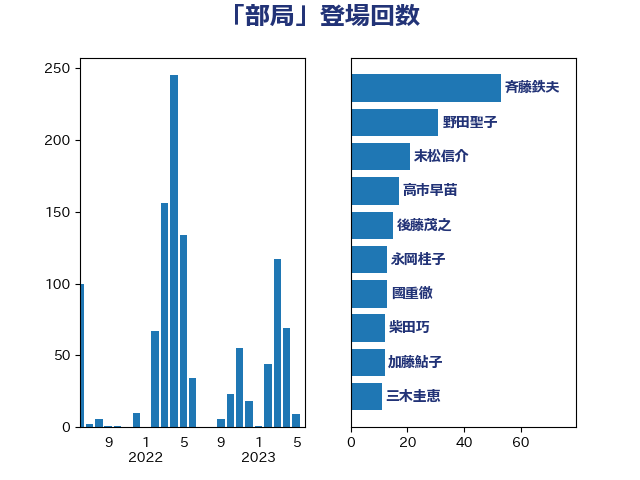

単語「部局」

| 斉藤鉄夫 | 公明党 | 53 回 |
| 野田聖子 | 自由民主党 | 31 回 |
| 末松信介 | 自由民主党 | 21 回 |
| 高市早苗 | 自由民主党 | 17 回 |
| 後藤茂之 | 自由民主党 | 15 回 |
| 永岡桂子 | 自由民主党 | 13 回 |
| 國重徹 | 公明党 | 13 回 |
| 柴田巧 | 日本維新の会 | 12 回 |
| 加藤鮎子 | 自由民主党 | 12 回 |
| 三木圭恵 | 日本維新の会 | 11 回 |
| 岸田文雄 | 自由民主党 | 10 回 |
| 金子恭之 | 自由民主党 | 9 回 |
| 西村康稔 | 自由民主党 | 9 回 |
| 松本剛明 | 自由民主党 | 9 回 |
| 小林鷹之 | 自由民主党 | 9 回 |
| 加藤勝信 | 自由民主党 | 9 回 |
| 古川元久 | 国民民主党 | 8 回 |
| 宮崎雅夫 | 自由民主党 | 7 回 |
| 大口善徳 | 公明党 | 7 回 |
| 野上浩太郎 | 自由民主党 | 6 回 |
| 山田勝彦 | 立憲民主党 | 6 回 |
| 阿部司 | 日本維新の会 | 5 回 |
| 鈴木俊一 | 自由民主党 | 5 回 |
| 西銘恒三郎 | 自由民主党 | 5 回 |
| 自見はなこ | 自由民主党 | 5 回 |
| 小倉將信 | 自由民主党 | 5 回 |
| 塩川鉄也 | 日本共産党 | 5 回 |
| 齋藤健 | 自由民主党 | 4 回 |
| 足立康史 | 日本維新の会 | 4 回 |
| 谷公一 | 自由民主党 | 4 回 |
| 藤岡隆雄 | 立憲民主党 | 4 回 |
| 若宮健嗣 | 自由民主党 | 4 回 |
| 竹内真二 | 公明党 | 4 回 |
| 稲津久 | 公明党 | 4 回 |
| 田村まみ | 国民民主党 | 4 回 |
| 松野博一 | 自由民主党 | 4 回 |
| 山本香苗 | 公明党 | 4 回 |
| 宮本岳志 | 日本共産党 | 4 回 |
| 堀場幸子 | 日本維新の会 | 4 回 |
| 務台俊介 | 自由民主党 | 4 回 |
| 伊藤岳 | 日本共産党 | 4 回 |
| 中野洋昌 | 公明党 | 4 回 |
| 阿部知子 | 立憲民主党 | 3 回 |
| 角田秀穂 | 公明党 | 3 回 |
| 萩生田光一 | 自由民主党 | 3 回 |
| 舟山康江 | 国民民主党 | 3 回 |
| 笠井亮 | 日本共産党 | 3 回 |
| 福島伸享 | 無所属 | 3 回 |
| 石井章 | 日本維新の会 | 3 回 |
| 白石洋一 | 立憲民主党 | 3 回 |
| 田村智子 | 日本共産党 | 3 回 |
| 田村憲久 | 自由民主党 | 3 回 |
| 浜田靖一 | 自由民主党 | 3 回 |
| 河野太郎 | 自由民主党 | 3 回 |
| 早稲田ゆき | 立憲民主党 | 3 回 |
| 早坂敦 | 日本維新の会 | 3 回 |
| 岡田直樹 | 自由民主党 | 3 回 |
| 山田太郎 | 自由民主党 | 3 回 |
| 山本博司 | 公明党 | 3 回 |
| 山崎正恭 | 公明党 | 3 回 |
| 小西洋之 | 立憲民主党 | 3 回 |
| 太田房江 | 自由民主党 | 3 回 |
| 塩村あやか | 立憲民主党 | 3 回 |
| 和田義明 | 自由民主党 | 3 回 |
| 古賀篤 | 自由民主党 | 3 回 |
| 伊佐進一 | 公明党 | 3 回 |
| 今井絵理子 | 自由民主党 | 3 回 |
| 井上哲士 | 日本共産党 | 3 回 |
| 中谷一馬 | 立憲民主党 | 3 回 |
| 下野六太 | 公明党 | 3 回 |
| 三浦靖 | 自由民主党 | 3 回 |
| 高橋光男 | 公明党 | 2 回 |
| 高橋はるみ | 自由民主党 | 2 回 |
| 長谷川英晴 | 自由民主党 | 2 回 |
| 鈴木英敬 | 自由民主党 | 2 回 |
| 芳賀道也 | 国民民主党 | 2 回 |
| 福重隆浩 | 公明党 | 2 回 |
| 神津たけし | 立憲民主党 | 2 回 |
| 石井苗子 | 日本維新の会 | 2 回 |
| 石井正弘 | 自由民主党 | 2 回 |
| 田畑裕明 | 自由民主党 | 2 回 |
| 田村貴昭 | 日本共産党 | 2 回 |
| 田名部匡代 | 立憲民主党 | 2 回 |
| 浦野靖人 | 日本維新の会 | 2 回 |
| 枝野幸男 | 立憲民主党 | 2 回 |
| 林芳正 | 自由民主党 | 2 回 |
| 松村祥史 | 自由民主党 | 2 回 |
| 掘井健智 | 日本維新の会 | 2 回 |
| 徳永エリ | 立憲民主党 | 2 回 |
| 山谷えり子 | 自由民主党 | 2 回 |
| 山添拓 | 日本共産党 | 2 回 |
| 山岸一生 | 立憲民主党 | 2 回 |
| 小田原潔 | 自由民主党 | 2 回 |
| 小沼巧 | 立憲民主党 | 2 回 |
| 大島敦 | 立憲民主党 | 2 回 |
| 塩田博昭 | 公明党 | 2 回 |
| 城井崇 | 立憲民主党 | 2 回 |
| 吉田とも代 | 日本維新の会 | 2 回 |
| 北神圭朗 | 無所属 | 2 回 |
| 伊藤孝江 | 公明党 | 2 回 |
| 中山展宏 | 自由民主党 | 2 回 |
| 鰐淵洋子 | 公明党 | 1 回 |
| 鬼木誠 | 立憲民主党 | 1 回 |
| 高見康裕 | 自由民主党 | 1 回 |
| 高橋千鶴子 | 日本共産党 | 1 回 |
| 高木陽介 | 公明党 | 1 回 |
| 音喜多駿 | 日本維新の会 | 1 回 |
| 青柳仁士 | 日本維新の会 | 1 回 |
| 門山宏哲 | 自由民主党 | 1 回 |
| 金村龍那 | 日本維新の会 | 1 回 |
| 金子恵美 | 立憲民主党 | 1 回 |
| 野間健 | 立憲民主党 | 1 回 |
| 重徳和彦 | 立憲民主党 | 1 回 |
| 里見隆治 | 公明党 | 1 回 |
| 逢坂誠二 | 立憲民主党 | 1 回 |
| 赤池誠章 | 自由民主党 | 1 回 |
| 赤木正幸 | 日本維新の会 | 1 回 |
| 赤嶺政賢 | 日本共産党 | 1 回 |
| 谷合正明 | 公明党 | 1 回 |
| 西村明宏 | 自由民主党 | 1 回 |
| 藤木眞也 | 自由民主党 | 1 回 |
| 葉梨康弘 | 自由民主党 | 1 回 |
| 荒井優 | 立憲民主党 | 1 回 |
| 若松謙維 | 公明党 | 1 回 |
| 緒方林太郎 | 無所属 | 1 回 |
| 紙智子 | 日本共産党 | 1 回 |
| 竹詰仁 | 国民民主党 | 1 回 |
| 窪田哲也 | 公明党 | 1 回 |
| 穂坂泰 | 自由民主党 | 1 回 |
| 穀田恵二 | 日本共産党 | 1 回 |
| 礒崎哲史 | 国民民主党 | 1 回 |
| 石川博崇 | 公明党 | 1 回 |
| 石垣のりこ | 立憲民主党 | 1 回 |
| 石原正敬 | 自由民主党 | 1 回 |
| 田中健 | 国民民主党 | 1 回 |
| 玉木雄一郎 | 国民民主党 | 1 回 |
| 牧義夫 | 立憲民主党 | 1 回 |
| 牧山ひろえ | 立憲民主党 | 1 回 |
| 滝沢求 | 自由民主党 | 1 回 |
| 渡辺猛之 | 自由民主党 | 1 回 |
| 渡辺創 | 立憲民主党 | 1 回 |
| 浅野哲 | 国民民主党 | 1 回 |
| 津島淳 | 自由民主党 | 1 回 |
| 泉健太 | 立憲民主党 | 1 回 |
| 河野義博 | 公明党 | 1 回 |
| 櫻井周 | 立憲民主党 | 1 回 |
| 横山信一 | 公明党 | 1 回 |
| 梶山弘志 | 自由民主党 | 1 回 |
| 柚木道義 | 立憲民主党 | 1 回 |
| 松本尚 | 自由民主党 | 1 回 |
| 本村伸子 | 日本共産党 | 1 回 |
| 星北斗 | 自由民主党 | 1 回 |
| 広瀬めぐみ | 自由民主党 | 1 回 |
| 平山佐知子 | 無所属 | 1 回 |
| 川合孝典 | 国民民主党 | 1 回 |
| 島村大 | 自由民主党 | 1 回 |
| 山本太郎 | れいわ新選組 | 1 回 |
| 尾身朝子 | 自由民主党 | 1 回 |
| 小泉進次郎 | 自由民主党 | 1 回 |
| 小沢雅仁 | 立憲民主党 | 1 回 |
| 小川淳也 | 立憲民主党 | 1 回 |
| 寺田稔 | 自由民主党 | 1 回 |
| 宮崎勝 | 公明党 | 1 回 |
| 奥野総一郎 | 立憲民主党 | 1 回 |
| 奥下剛光 | 日本維新の会 | 1 回 |
| 大西健介 | 立憲民主党 | 1 回 |
| 國場幸之助 | 自由民主党 | 1 回 |
| 吉川赳 | 無所属 | 1 回 |
| 吉川沙織 | 立憲民主党 | 1 回 |
| 古賀友一郎 | 自由民主党 | 1 回 |
| 古川禎久 | 自由民主党 | 1 回 |
| 古川直季 | 自由民主党 | 1 回 |
| 古川康 | 自由民主党 | 1 回 |
| 加田裕之 | 自由民主党 | 1 回 |
| 佐藤英道 | 公明党 | 1 回 |
| 佐藤啓 | 自由民主党 | 1 回 |
| 佐々木さやか | 公明党 | 1 回 |
| 伊藤渉 | 公明党 | 1 回 |
| 伊藤孝恵 | 国民民主党 | 1 回 |
| 仁比聡平 | 日本共産党 | 1 回 |
| 中西祐介 | 自由民主党 | 1 回 |
| 中村裕之 | 自由民主党 | 1 回 |
| 中川宏昌 | 公明党 | 1 回 |
| 中司宏 | 日本維新の会 | 1 回 |
| 上田清司 | 国民民主党 | 1 回 |
| 上月良祐 | 自由民主党 | 1 回 |
| たがや亮 | れいわ新選組 | 1 回 |